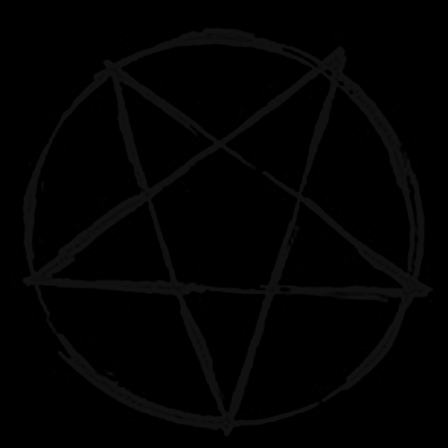

Tämä sivu on tarkoitettu unohdettavaksi
Kuten kaikki muukin, tämä sivu tulee katoamaan.
Sen ei ole tarkoitus olla muistettava.
Sen ei ole tarkoitus tehdä vaikutusta.
Sen on tarkoitus olla olemassa vain hetken
sitten kadota fyysisesti
henkisesti
ja kokonaan.
Kunnes mitään ei ole jäljellä.